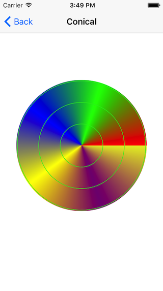
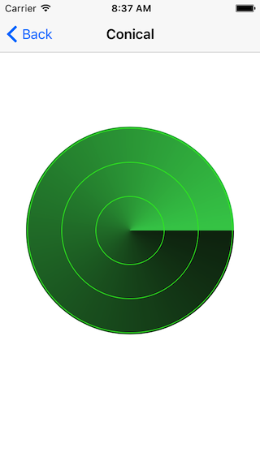

Core Graphics 支持两种渐变：线性(Axial)和径向(Radial)渐变，但是有的时候我们可能会用到圆锥(Conical)渐变，例如在扫描附近的目标时，交互可能用上带这种渐变的雷达效果，它长这样：


要实现这样一种渐变你会怎么做呢？我的想法是从渐变的本质着手。渐变是从一种颜色渐渐变化成另外一种颜色，而圆锥渐变是根据角度渐渐变化。我们把界面看成位图，这样可以由点的位置得到它的角度，继而根据角度线性插值可以得到它的颜色，最终就可以得到圆锥渐变。
想法有了，接下来我们用它来实现上图中 Find My iPhone 图标的雷达效果吧。
首先定义一个 CALayer 的子类 ConicalLayer，
1
2
3
4
5
6
7
8
9
10
11
12
13
14
15
16
17
18
19
20
21
22
23
24
25
26
27
28
29
30
31
32
33
34
35
36
37
38
39
40
41
42
43
44
45
46
47
48
49
50
51
52
53
54
55
56
57
58
59
60
61
62
63
64
65
66
67
68
69
70
71
72
73
74
75
76
77
78
79
80
81
82
83
84
85
86
87
88
89
90
91
92
93
94
95
96
97
98
99
100
101
102
103
104
105
106
107
108
109
110
111
112
113
114
115
116
117
118
| // ConicalLayer.h
@interface ConicalLayer : CALayer
/// An array of CGColorRef objects defining the color of each gradient stop.
@property(copy) NSArray *colors;
@end
// ConicalLayer.m
- (id)init
{
if (!(self = [super init])) {
return nil;
}
_needsDisplayOnBoundsChange = YES;
return self;
}
- (void)drawInContext:(CGContextRef)ctx
{
// Draw background
CGRect rect = CGContextGetClipBoundingBox(ctx);
CGContextSetFillColorWithColor(ctx, self.backgroundColor);
CGContextFillRect(ctx, rect);
if (self.colors.count < 1) {
return;
}
else if (self.colors.count < 2) {
// There is only one color so directly draw with it
CGColorRef color = (__bridge CGColorRef)(self.colors.firstObject);
CGContextSetFillColorWithColor(ctx, color);
CGContextFillRect(ctx, rect);
return;
}
CGColorSpaceRef colorSpace = CGColorSpaceCreateDeviceRGB();
size_t width = rect.size.width;
size_t height = rect.size.height;
size_t bitsPerCompoent = 8;
size_t bytesPerRow = width * 4;
size_t bitmapByteCount = bytesPerRow * height;
uint32_t *bitmapData = calloc( bitmapByteCount / sizeof(uint32_t), sizeof(uint32_t) );
// Map color to linear array each compoent occupy 1 byte
uint8_t *colorCompoents = calloc(self.colors.count * 4, sizeof(uint8_t));
for (int i = 0; i < self.colors.count; ++i) {
CGColorRef c = (__bridge CGColorRef)(self.colors[i]);
const CGFloat *compoents = CGColorGetComponents(c);
uint8_t red = compoents[0] * 255;
uint8_t green = compoents[1] * 255;
uint8_t blue = compoents[2] * 255;
uint8_t alpha = compoents[3] * 255;
int index = i * 4;
*(colorCompoents + index) = red;
*(colorCompoents + index + 1) = green;
*(colorCompoents + index + 2) = blue;
*(colorCompoents + index + 3) = alpha;
}
// Creating a Bitmap Graphics Context for conical gradient
CGBitmapInfo bitmapInfo = kCGImageAlphaPremultipliedLast | kCGBitmapByteOrder32Little;
CGContextRef bitmapGraphicsCtx = CGBitmapContextCreate(bitmapData, width, height, bitsPerCompoent, bytesPerRow, colorSpace, bitmapInfo);
// Creating conical gradient from a Bitmap Graphics Context
CGImageRef conicalGradientImage = CGBitmapContextCreateImage(bitmapGraphicsCtx);
CGContextRelease(bitmapGraphicsCtx);
free(colorCompoents);
free(bitmapData);
CGColorSpaceRelease(colorSpace);
// Draws conical gradient image into a graphics context.
CGContextDrawImage(ctx, rect, conicalGradientImage);
CGImageRelease(conicalGradientImage);
// Draws three concentric
CGContextBeginPath(ctx);
CGFloat halfWidth = 0.5 * CGRectGetWidth(rect);
CGFloat maxRadii = 0.8 * halfWidth;
CGFloat radii = floor(0.33 * maxRadii);
for (int i = 1; i < 4; ++i) {
CGFloat r = radii * i;
CGFloat dx = halfWidth - r;
CGRect ellipseRect = CGRectInset(rect, dx, dx);
CGContextAddEllipseInRect(ctx, ellipseRect);
}
CGContextSetRGBStrokeColor(ctx, 41/255.0, 234/255.0, 35/255.0, 1.0);
CGContextStrokePath(ctx);
}
- (BOOL)needsDisplayOnBoundsChange
{
return _needsDisplayOnBoundsChange;
}
- (void)setNeedsDisplayOnBoundsChange:(BOOL)needsDisplayOnBoundsChange
{
}
|
现在我们把架子搭起来了，但是还没有往位图里面填充颜色，在这之前，对这段代码稍作解释，首先是我覆盖了needsDisplayOnBoundsChange 属性的 getter 和 setter 方法，原因是我设置图层关联的背景颜色时会触发这个属性变 NO，导致 drawInContext 不会被调用，我认为这是 Apple 的一个 bug，已经作了反馈，所以这里我使用了这么一个绕过的方法。
其次，我把 RGB 颜色空间的颜色分量取出来放在了一个一维数组里用来备用；最后是 bitmapInfo 要或上 kCGBitmapByteOrder32Little，不然结果会不正确。
接下来就是要填充位图的颜色，代码如下：
1
2
3
4
5
6
7
8
9
10
11
12
13
14
15
16
17
18
19
20
21
22
23
24
25
26
27
28
29
30
31
32
33
34
35
36
37
38
39
40
41
42
43
44
45
46
47
48
49
50
51
52
53
54
55
56
57
58
59
60
61
62
63
64
65
66
67
68
| // Create conical gradient bitmap data
CGFloat centerX = width * 0.5;
CGFloat centerY = height * 0.5;
double baseAngle = 2*M_PI / (self.colors.count - 1);
for (int i = 0; i < height; ++i) {
for (int j = 0; j < width; ++j) {
CGFloat x = j - centerX;
CGFloat y = i - centerY;
// define atan2 uniquely one uses the principal value in the range (−π, π]. That is, −π < atan2(y, x) ≤ π.
double angle = atan2(y, x);
// Convert atan2 result angle to range [0, 2π]
if (angle < 0) {
angle += 2 * M_PI;
}
// 0-360 map to linear gradient
double angleRatio = angle / baseAngle;
int colorIndex = angleRatio; // How many times of base angle?
angle -= colorIndex * baseAngle;
angleRatio = angle / baseAngle;
colorIndex *= 4;
uint8_t red0 = colorCompoents[colorIndex];
uint8_t red1 = colorCompoents[colorIndex + 4];
// Green index
colorIndex += 1;
uint8_t green0 = colorCompoents[colorIndex];
uint8_t green1 = colorCompoents[colorIndex + 4];
// Blue index
colorIndex += 1;
uint8_t blue0 = colorCompoents[colorIndex];
uint8_t blue1 = colorCompoents[colorIndex + 4];
// Alpha index
colorIndex += 1;
uint8_t alpha0 = colorCompoents[colorIndex];
uint8_t alpha1 = colorCompoents[colorIndex + 4];
// uint8_t red = red0 + angleRatio * (red1 - red0);
// uint8_t green = green0 + angleRatio * (green1 - green0);
// uint8_t blue = blue0 + angleRatio * (blue1 - blue0);
// uint8_t alpha = alpha0 + angleRatio * (alpha1 - alpha0);
uint8_t red = lerp(red0, red1, angleRatio);
uint8_t green = lerp(green0, green1, angleRatio);
uint8_t blue = lerp(blue0, blue1, angleRatio);
uint8_t alpha = lerp(alpha0, alpha1, angleRatio);
// Multiple alpha
float a = alpha / 255.0;
red *= a;
green *= a;
blue *= a;
unsigned long index = i * width + j;
*(bitmapData + index) = (red << 24) | (green << 16) | (blue << 8) | alpha;
}
}
|
同样也稍微解释下其中的代码，首先是位图的填充要按照先行后列的顺序，行对就宽，列对应高；其次反正切函数的值域是(−π, π]，所以要把它们映射到[0, 2π]；然后我们根据角度对应的区间，选择起始和终点颜色，再由线性插值得到各自的颜色分量，实践中每个颜色分量还乘上了当前的透明度，最后合成该点的颜色。
完整示例
Reference:
Conical gradient in Qt (without QConicalGradient)
MKGradientView
Color gradient
Linear interpolation
atan2